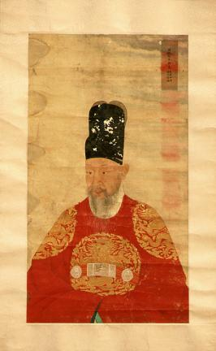

영조
"조선 역대 최장기 재위 군주, 탕평과 민생 안정으로 중흥을 이끌다."

- 이름: 이금 (李昑) / 자: 광숙 (光叔)
- 가족 관계: 숙종의 둘째 아들이며 모친은 숙빈 최씨. 비(妃)는 정성왕후 서씨.
- 즉위 배경: 9세에 연잉군에 봉해짐. 이복형 경종이 즉위한 후 후사가 없자 왕세제로 책봉되었으며, 노론과 소론의 극심한 당쟁(신임사화 등) 속에서 생명의 위협을 딛고 경종의 뒤를 이어 제21대 국왕으로 즉위함.
- 재위 기간: 1724년 ~ 1776년
- 대표 업적
- 당파에 치우치지 않고 고르게 인재를 등용하는 '탕평책' 추진
- 군역의 부담을 절반으로 경감해 준 '균역법' 시행
- 조선의 법 제도를 재정비한 법전 '속대전' 편찬·반포
1. 정국 운영의 핵심: 탕평책 (蕩平策)
- 배경: 숙종 대의 잦은 '환국'과 경종 대의 피비린내 나는 옥사를 직접 겪으며 붕당정치의 폐해(당론이 살육과 망국의 근본임)를 뼈저리게 인식함.
- 완론탕평(緩論蕩平): 왕이 초월적 군주이자 스승(君師)의 위치에서 당파의 시비를 가리지 않고, 어느 당이든 온건하고 타협적인 인물을 고루 등용함 (노론·소론 중심에서 남인, 북인까지 조정에 참여시킴).
- 붕당의 뿌리 제거: 재야 산림의 공론을 인정하지 않고 그들의 본거지인 서원을 대폭 정리함. 또한 당쟁의 온상이었던 이조낭관·한림의 자천제(후임 추천권)를 폐지함.
2. 주요 업적 (민생 안정과 문물 정비)
- 균역법(均役法) 제정: 백성들이 군대 대신 내던 군포를 2필에서 1필로 절반이나 줄여주어 삶의 부담을 크게 덜어줌. 부족한 재정은 궁전·둔전 및 결작 등으로 보완함.
- 청계천 준설(준천) 공사: 서울 주민 15만 명과 역부 5만 명을 동원해 청계천을 대대적으로 준설함으로써 서울 시민들의 홍수 및 하수처리 문제를 완벽히 해결함.
- 백성과의 소통: 일반 백성의 억울함을 왕에게 직접 알릴 수 있도록 '신문고 제도'를 부활시킴.
- 무릎을 무거운 돌로 짓누르는 압슬형, 사형수의 살을 도려내거나 글자를 새기는 가혹한 형벌들을 폐지함
- 억울한 사형수가 없도록 사형수에 대한 삼심제(三審制)를 엄격하게 시행함.
- 사치와 낭비를 막기 위해 강력한 금주령(禁酒令)을 시행함.
- 법전 및 의례 정비: 조선 후기 실정에 맞게 법전을 재정비한 《속대전(續大典)》과 《국조속오례의》를 편찬함
- 백과사전 편찬: 조선의 문물을 총망라한 최초의 한국학 백과사전 《동국문헌비고(東國文獻備考)》를 편찬함.
- 기타 서적: 자신의 왕위 정통성을 밝힌 《천의소감》과 성리학적 지식을 담아 직접 지은 《어제자성편》 등을 반포함.
파격적인 민생 안정 정책
가혹한 형벌 폐지 및 인권 존중
문물 정비와 편찬 사업 (문예 부흥)
3. 치세 속의 정치적 파란과 비극
- 반란과 옥사: 즉위 초 소론 과격파와 남인 일부가 일으킨 이인좌의 난(무신란, 1728년)과 소론 세력의 도전이었던 을해옥사(나주괘서사건, 1755년)를 겪음.
- 사도세자 사건 (임오화변, 1762년): 노론과 소론의 대립 속에서 갈등을 겪던 끝에, 아들 사도세자를 뒤주에 가두어 죽게 하는 역사상 가장 비극적인 가족사를 남김.
4. 최후와 역사적 의의
- 1776년 향년 83세를 일기로 승하함. 조선 왕조 역사상 가장 오래 살고(83세), 가장 길게 재위(52년)한 왕임. 현재 경기도 구리시의 원릉(元陵)에 안장되어 있음.
- 의의: 당쟁을 누르고 사회 경제적 안정을 확립하여 조선 후기 중흥의 발판을 마련했으며, 이 기틀은 손자인 정조 대의 대전성기로 이어짐.